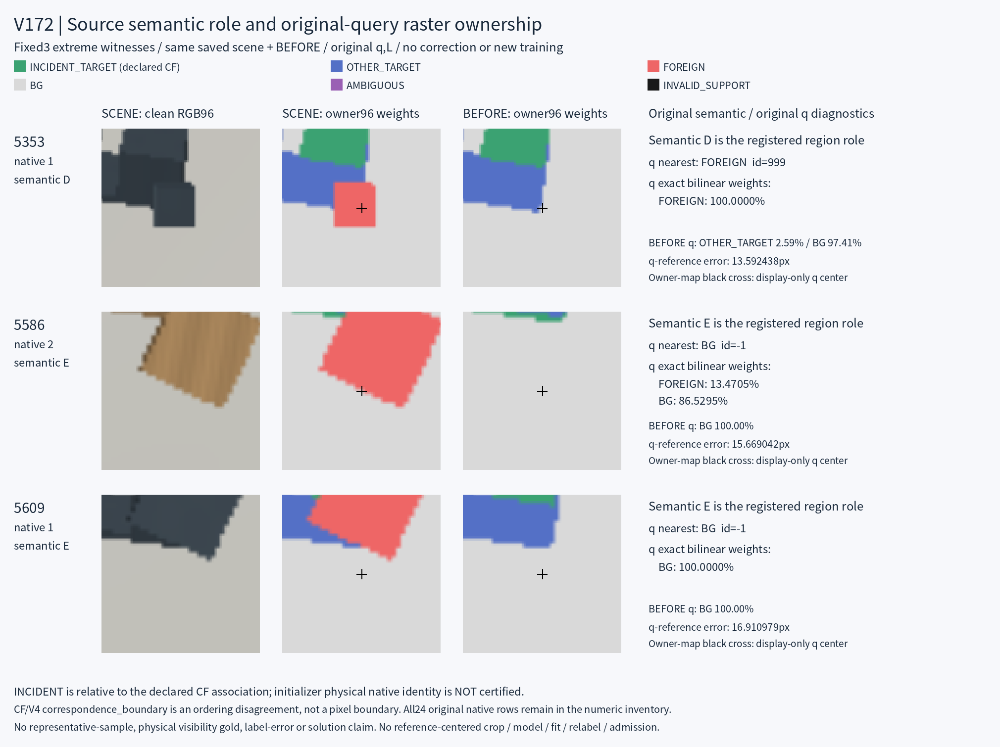

2026-10-24 · 공개·합성 소스 의미 진단 단계 · 신규 학습 0 · 좌표/문턱/라벨 수정 0 · 모델 채택 없음 · 미해결
이번 진전은 모델 성능 향상이 아니라 목표 의미의 차이를 원기록으로 확인한 것입니다. 등록된 3D native 부위가 보이는지, 원 query 중심에 무엇이 있는지, 그 query가 같은 native에 정확히 대응하는지는 서로 다른 질문입니다. 기존 학습에는 이미 별도 출력과 loss가 있습니다. 아직 부족한 것은 인증된 정답과 물리 native 대응 근거입니다.
모두 VALIDATION이며 TRAIN 사례가 아닙니다. D/E는 등록 endpoint·edge·face의 유한 continuous witness 집합 판정입니다. 아래 q 소속은 같은 원 좌표에서 별도로 측정한 raster 진단입니다.
| 원 행 / 장면 / native | semantic | q nearest | SCENE의 q bilinear | BEFORE target-only의 같은 q | SCENE nominal ref nearest |
|---|---|---|---|---|---|
| 5353 / 장면669 / native1 | D | FOREIGN | 외부 물체 100.00% | 다른 target 부위 2.59% + 배경 97.41% | INCIDENT_TARGET |
| 5586 / 장면698 / native2 | E | BG | 외부 물체 13.47% + 배경 86.53% | 배경 100.00% | FOREIGN |
| 5609 / 장면701 / native1 | E | BG | 배경 100.00% | 배경 100.00% | FOREIGN |
5353은 q에서 외부 물체를 보지만 BEFORE에도 해당 q에는 선언 native 부위가 없습니다. 5586과 5609의 q는 BEFORE에서 배경입니다. 따라서 q의 foreign/background 소속을 native 외부 가림 정답으로 자동 전환할 수 없습니다. 5586의 reference nearest도 BEFORE에서는 배경이지만, 모서리의 raster 판정과 continuous 등록 영역 판정은 동일하지 않습니다.

semantic D8 / E3 / U10 / S3. 원 입력 U는 0/24입니다. q nearest 소속은 배경18 / 외부 물체2 / 다른 target 부위3 / 선언 native 부위1입니다. semantic U10은 입력 불가를 뜻하지 않습니다.
| semantic | 선언 native 부위 | 다른 target 부위 | 외부 물체 | 배경 | 합계 |
|---|---|---|---|---|---|
| D | 0 | 0 | 2 | 6 | 8 |
| E | 0 | 0 | 0 | 3 | 3 |
| U | 1 | 0 | 0 | 9 | 10 |
| S | 0 | 3 | 0 | 0 | 3 |
D=등록 영역 보임, E=외부 가림, S=자체 가림, U=semantic 미정. INCIDENT_TARGET은 선언 CF 대응 기준입니다. CF/V4 경계에서 initializer가 실제로 학습한 물리 native identity는 미인증입니다. 3개 극단 constraint witness와 주변24행은 전체 corpus의 대표 표본이 아닙니다.
native external visibility, literal query owner, coordinate quality는 별도 정답·mask·loss를 사용합니다. quality/entity는 별도 MLP·optimizer이며 primary visibility를 gate하지 않습니다. owner253은 별도 출력이지만 visibility 앞 hidden을 공유하므로 표현에 영향을 줄 수 있습니다. V166의 coarse native92도 물리 좌표·quality gold를 만들지는 않았습니다.
필요한 근거는 같은 원 q/native/selected-instance에 대한 의도 native 부위 가시성, literal footprint 소속, native 좌표 대응·불확실성의 독립적 인증입니다. 이번 결과만으로 원 semantic 라벨 오류, 전체 실패 원인 또는 모든 소스의 품질을 확정할 수 없습니다. split architecture를 새로 발견했다는 결론도 아닙니다.
측정 1회 exit0 · toy 14 PASS · 원24 identity/q/L/native/semantic/input flags 보존 · 3장면 RGB SHA는 원 V171과 일치 · 원6 buffer SHA 불변. A는 선택3의 q/reference × SCENE/BEFORE 12점을 원배열에서 독립 계산하여 nearest12·source pixel48·bilinear12를 검산했습니다. 이는 all24 central32 전수 독립 재계산은 아닙니다.
이번 단계 신규 head 학습·forward·feature 추출·PnP·q/L 수정·문턱 조정·라벨 교정·학습 입장은 모두 0입니다. 전체 과제 해결 및 모델 채택을 주장하지 않습니다.
후속 방향은 이번 데이터를 학습에 넣거나 라벨을 고치지 않고, 공개 source-only 원본6144 query 전수에서 q 소속과 같은 위치의 BEFORE target 유무를 따로 검증하는 것입니다. foreign의 존재와 실제 target 가림을 구분하며 원 semantic·불확실 CF identity를 보존합니다. 이 후속 census와 새 성능 확보는 이번 단계에 포함되지 않습니다.
저장 측정 COMPLETE · 원24행 진단 · 소스 정의 추적 A · 독립 정적 검토 A · 기존 학습 계약 C · 원배열 독립 수동 검산 A · 도표 생성 기록 · 도표 실제 시각 QA B · 도표 실제 시각 QA root · 실제 측정 terminal
전체 수치·해석·SHA binding JSON · 단계 완료 범위
{
"ROOT_SCOPE_BEFORE_SOURCE_MASK_OR_DEPTH_BODIES.json": {
"path": "/home/minjae/Documents/Codex/2026-10-20/task-2/pallet-keypoint-visibility/query_visibility_source_mask_semantics_audit_20261024_v172/ROOT_SCOPE_BEFORE_SOURCE_MASK_OR_DEPTH_BODIES.json",
"sha256": "c2a62ce2d9b257f6fdffe2f71adc13e28b9f7eb6713f88c308f6710c45b555c8"
},
"saved_mask_semantics_measurement_v1/COMPLETE.json": {
"path": "/home/minjae/Documents/Codex/2026-10-20/task-2/pallet-keypoint-visibility/query_visibility_source_mask_semantics_audit_20261024_v172/saved_mask_semantics_measurement_v1/COMPLETE.json",
"sha256": "12d2d8375de1e573f021536176be81ed4aae1f0c10ece179deb2b5782dbd2b78"
},
"saved_mask_semantics_measurement_v1/ALL24_ORIGINAL_QUERY_AND_REFERENCE_DIAGNOSTICS.jsonl": {
"path": "/home/minjae/Documents/Codex/2026-10-20/task-2/pallet-keypoint-visibility/query_visibility_source_mask_semantics_audit_20261024_v172/saved_mask_semantics_measurement_v1/ALL24_ORIGINAL_QUERY_AND_REFERENCE_DIAGNOSTICS.jsonl",
"sha256": "22a1988555c2a4ba7feb1bb676c48422e2ed5b2b47d51d50c3cc9f8d0f5b2d53"
},
"source_definition_review_a/REVIEW.json": {
"path": "/home/minjae/Documents/Codex/2026-10-20/task-2/pallet-keypoint-visibility/query_visibility_source_mask_semantics_audit_20261024_v172/source_definition_review_a/REVIEW.json",
"sha256": "adc4cec204d4d5dfb0f3eab1ce2488249777539b6ac37fd9b7d9b2742024d5e5"
},
"measurement_code_review_a/REVIEW.json": {
"path": "/home/minjae/Documents/Codex/2026-10-20/task-2/pallet-keypoint-visibility/query_visibility_source_mask_semantics_audit_20261024_v172/measurement_code_review_a/REVIEW.json",
"sha256": "ac0f98bd055eeb90c6f62b43b6a987d1635a75f362c0ecf1e13b263293343ce5"
},
"ROOT_STATIC_MEASUREMENT_CODE_REVIEW.json": {
"path": "/home/minjae/Documents/Codex/2026-10-20/task-2/pallet-keypoint-visibility/query_visibility_source_mask_semantics_audit_20261024_v172/ROOT_STATIC_MEASUREMENT_CODE_REVIEW.json",
"sha256": "4f9e29c22ff86e2f14f4fb32f5429afd16028696a4be3f2e7dedfdf7bd5095fe"
},
"source_training_contract_review_c/REVIEW.json": {
"path": "/home/minjae/Documents/Codex/2026-10-20/task-2/pallet-keypoint-visibility/query_visibility_source_mask_semantics_audit_20261024_v172/source_training_contract_review_c/REVIEW.json",
"sha256": "f656eac95ce5644c27dd0c7f0b53cde98130d0c81543ec1e452eb2302ec718eb"
},
"INPUT_PATH_READINESS.json": {
"path": "/home/minjae/Documents/Codex/2026-10-20/task-2/pallet-keypoint-visibility/query_visibility_source_mask_semantics_audit_20261024_v172/INPUT_PATH_READINESS.json",
"sha256": "e0b3b8eacc12698103f1aee34fd914973adc83759db960335f2bc79576f16a2c"
},
"actual_saved_measurement_review_a/REVIEW.json": {
"path": "/home/minjae/Documents/Codex/2026-10-20/task-2/pallet-keypoint-visibility/query_visibility_source_mask_semantics_audit_20261024_v172/actual_saved_measurement_review_a/REVIEW.json",
"sha256": "e741aec263e6e0899c8950cf47d6df511e026d9acf2156f19ffc313772f3482e"
},
"fixed3_forensic_figure_v1/COMPLETE.json": {
"path": "/home/minjae/Documents/Codex/2026-10-20/task-2/pallet-keypoint-visibility/query_visibility_source_mask_semantics_audit_20261024_v172/fixed3_forensic_figure_v1/COMPLETE.json",
"sha256": "1711549025fdc92583efc57342a43960938d10398e68a65840ba6a11eefdeac2"
},
"fixed3_forensic_figure_v1/ACTUAL_VISUAL_QA.json": {
"path": "/home/minjae/Documents/Codex/2026-10-20/task-2/pallet-keypoint-visibility/query_visibility_source_mask_semantics_audit_20261024_v172/fixed3_forensic_figure_v1/ACTUAL_VISUAL_QA.json",
"sha256": "21b30e1af67e249cce1467544e9d84d8a47de412076ecf7fdb001c18d9f6eadc"
},
"ROOT_ACTUAL_FIXED3_FORENSIC_FIGURE_VISUAL_QA.json": {
"path": "/home/minjae/Documents/Codex/2026-10-20/task-2/pallet-keypoint-visibility/query_visibility_source_mask_semantics_audit_20261024_v172/ROOT_ACTUAL_FIXED3_FORENSIC_FIGURE_VISUAL_QA.json",
"sha256": "0e3992c82bfd6d41404b3f56753bc2d5955d7cc308d2bcc4b8066b6402686587"
},
"ROOT_ACTUAL_SOURCE_MASK_MEASUREMENT_TERMINAL.json": {
"path": "/home/minjae/Documents/Codex/2026-10-20/task-2/pallet-keypoint-visibility/query_visibility_source_mask_semantics_audit_20261024_v172/ROOT_ACTUAL_SOURCE_MASK_MEASUREMENT_TERMINAL.json",
"sha256": "e1a511ecd94e1fcc86e669e1fc4ad12810a0c2692f53f273ddff0d6d718b40cb"
}
}